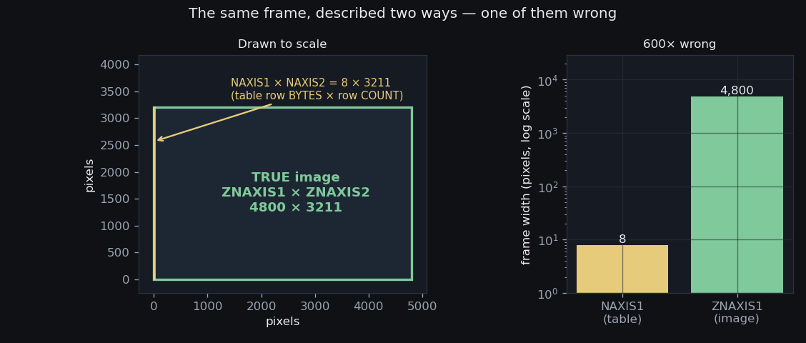
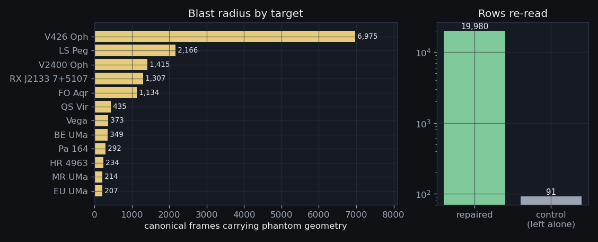
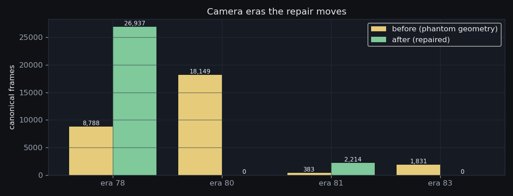
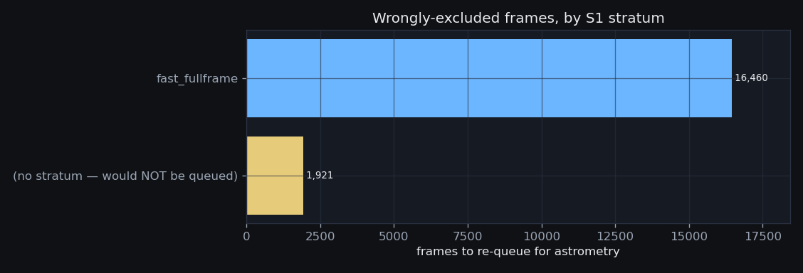

20,071 catalog rows re-read · 19,980 repaired · 18,381 frames returned to astrometry · 0 published era ids redefined · back to the evidence hub
The catalog said the observatory had taken thousands of 8 × 3211-pixel exposures — strips one hundredth the width of the detector. No observing programme in the archive asks for that shape. Are they real?
They are not. Here are the first cards of a real archive
file, rawimage/2026-04-24/img_IC2167_120s_g_0.fts.fz, read straight from disk:
XTENSION= 'BINTABLE' / binary table extension BITPIX = 8 / 8-bit bytes NAXIS = 2 / 2-dimensional binary table NAXIS1 = 8 / width of table in bytes NAXIS2 = 3211 / number of rows in table PCOUNT = 15051851 / size of special data area GCOUNT = 1 / one data group (required keyword) TFIELDS = 1 / number of fields in each row TTYPE1 = 'COMPRESSED_DATA' / label for field 1 TFORM1 = '1PB(4777)' / data format of field: variable length array ZIMAGE = T / extension contains compressed image ZTILE1 = 4800 / size of tiles to be compressed ZTILE2 = 1 / size of tiles to be compressed ZCMPTYPE= 'RICE_1 ' / compression algorithm ZNAME1 = 'BLOCKSIZE' / compression block size ZVAL1 = 32 / pixels per block ZNAME2 = 'BYTEPIX ' / bytes per pixel (1, 2, 4, or 8) ZVAL2 = 2 / bytes per pixel (1, 2, 4, or 8) EXTNAME = 'COMPRESSED_IMAGE' ZSIMPLE = T / conforms to FITS standard ZBITPIX = 16 / array data type ZNAXIS = 2 / number of array dimensions
A tile-compressed FITS file does not store an image; it
stores a binary table whose rows hold compressed tiles.
So NAXIS1 is the width of one table row in bytes
(8 — a single variable-length-array descriptor) and
NAXIS2 is the number of rows (3211, one per tile row).
The real picture size sits nine cards lower, in
ZNAXIS1 / ZNAXIS2.

Geometry is resolved by one pure function,
macro_core.fitsgeom.resolve_geometry: when a header carries the
compression markers (ZIMAGE / ZCMPTYPE)
the dimensions are ZNAXIS*; otherwise they are
NAXIS*. A header that claims compression but carries no
ZNAXIS* raises rather than falling back —
falling back is precisely what produced this defect.
Why the rows were wrong in the first place: astropy
translates Z* for you, so the scanner was safe when it
could read the header at all. These files carry a malformed
CONTINUE card (a CONTINUE following a non-string
FWALLNAM value) that makes Header.update raise
VerifyError and abandon the whole header — and the
fallback read the raw table header. The scanner now merges cards
one at a time, so one bad card costs that card, not the frame.
How far did the phantom geometry travel — how many rows, which cameras, which science targets, and how many frames did it cost the astrometry batch?
Every catalog row whose stored naxis1 was small
enough to be a table row-length (20,071 rows) was
re-read from the archive. The change matrix:
| stored geometry | re-read as | rows | outcome |
|---|---|---|---|
| 8 × 3,211 | 4,800 × 3,211 | 19,980 | repaired |
| 57 × 48 | 57 × 48 | 48 | left alone |
| 56 × 52 | 56 × 52 | 36 | left alone |
| 45 × 34 | 45 × 34 | 5 | left alone |
| 16 × 23 | 16 × 23 | 2 | left alone |
19,980 rows carried phantom geometry and were repaired. 91 rows were genuinely small — Andor iKon focus and guide windows, uncompressed — and came back byte-identical. That control group is the proof the repair was surgical: it was included in the re-scan on purpose. 0 rows failed to read. 0 phantom rows remain.

By camera era — both affected eras are keyed on the phantom geometry, so both are phantom configurations:
| era | readout | geometry | bin | EGAIN | affected frames |
|---|---|---|---|---|---|
| 80 | Fast | 8 × 3,211 | 2 | 1 | 18,149 |
| 83 | (blank) | 8 × 3,211 | 2 | 56 | 1,831 |
Repair the geometry in place, and only the geometry:
rescan_geometry.py writes naxis1/naxis2
and nothing else, recording the old and new value of every row it reads in
geom_rescan whether that row changed or not.
The audit table is permanent, so the repair is reversible and the before/after diff on this page is evidence rather than recollection.
Camera eras are keyed on
(READOUTM, NAXIS1, NAXIS2, XBINNING, EGAIN), so correcting the
geometry changes the key of every affected frame. Era ids are also a
pinned registry: reports, five strategy documents and the
ops request cite “era 76”, “era 47”. Does
any published id change meaning underneath a citation?
The manifest was copied and rebuilt against the repaired catalog — twice, once before and once after — and the two era tables were diffed. The live manifest was never written to; an S1 batch solve was running throughout. Of 84 eras, these moved:
| era | key before | key after | frames before | frames after | verdict |
|---|---|---|---|---|---|
| 78 | ('Fast', 4800, 3211, 2, 1.0) | ('Fast', 4800, 3211, 2, 1.0) | 8,788 | 26,937 | ABSORBED (+frames) |
| 80 | ('Fast', 8, 3211, 2, 1.0) | ('Fast', 8, 3211, 2, 1.0) | 18,149 | 0 | RETIRED (emptied) |
| 81 | ('', 4800, 3211, 2, 56.0) | ('', 4800, 3211, 2, 56.0) | 383 | 2,214 | ABSORBED (+frames) |
| 83 | ('', 8, 3211, 2, 56.0) | ('', 8, 3211, 2, 56.0) | 1,831 | 0 | RETIRED (emptied) |

No published era id was redefined. Every id still denotes exactly the camera configuration it denoted before — the phantom ids simply now describe a configuration that never existed and hold zero frames.
This falls out of the registry design rather than from care taken after the fact: because ids are keyed on the configuration tuple itself, a frame whose geometry is corrected moves to the id that already owns its true configuration. The phantom id keeps its definition and loses its frames — which is exactly “retire the phantom, do not redefine a cited number”, enforced structurally.
The retired ids must stay in the registry as zero-frame entries, not be deleted and not be reused: a future build that reissued those numbers to a new configuration would resurrect precisely the citation corruption this design prevents. Any document that cites a retired era should be corrected to cite the era that absorbed its frames.
S1 excludes frames narrower than
MIN_SOLVABLE_NAXIS = 512 px as “sub-frame photometry
windows” — too little sky for quad matching. Given the geometry
was wrong, how many of those exclusions were wrong too?
Running the project’s own gates
(macro_core.astrom) over the before- and after-manifests:
18,381 frames move from excluded to solvable. The
window-geometry exclusion does not merely shrink — it goes to
zero. There were never any photometry windows in the S1
candidate universe; the entire population was this artifact.

| stratum | frames | status |
|---|---|---|
fast_fullframe | 16,460 | queued by a rebuild |
| (none — classify_stratum returns NULL) | 1,921 | SILENTLY DROPPED |
Among them are all 207 EU UMa frames — the series the CV time-series project recorded as permanently unsolvable. They are full 4800 × 3211 fields.
| target | frames to re-queue |
|---|---|
| V426 Oph | 6,975 |
| LS Peg | 2,166 |
| V2400 Oph | 1,415 |
| RX J2133 7+5107 | 1,307 |
| FO Aqr | 1,134 |
| QS Vir | 435 |
| BE UMa | 349 |
| Pa 164 | 292 |
| MR UMa | 214 |
| EU UMa | 207 |
| AR UMa | 194 |
| SDSS J134841 61+183410 5 | 180 |
Rebuild the manifest, then rebuild the S1 queue so the batch
picks these frames up. But 1,921 of them carry no
stratum and a queue rebuild alone would drop them without a word:
classify_stratum returns NULL for a CV target in an
unplanned configuration (EU UMa on Fast readout hits
return None # CV frame in an unplanned config) and for the
blank-READOUTM era. Closing that gap changes an accepted
experiment design, so it is raised here as a decision, not taken quietly.
The comment beside the fast_fullframe stratum
— “geometry gate already dropped strips” — is now
false and must be corrected: that stratum is where most of these frames
belong, and its population roughly grows sevenfold.
{kind=link}
{kind=link}
{kind=link}
{kind=link}